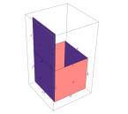

PolyLink
A library to allow manipulation of geometry from within Mathematica
Main Page
Packages
Classes
Files
File List
All
Classes
Namespaces
Files
Functions
Variables
Properties
ConvexShortestPathFinder.cs
Go to the documentation of this file.
1
using
System;
2
using
System.Collections.Generic;
3
using
System.Linq;
4
using
System.Text;
5
using
System.Threading.Tasks;
6
using
Wolfram.NETLink;
7
8
namespace
Defunct
9
{
/*
10
11
public class ConvexShortestPathFinder : MathLinked
12
{
13
public Polyhedron Poly
14
{
15
get { return _poly; }
16
}
17
18
public HalfEdge StartHE
19
{
20
get { return _startHE; }
21
}
22
23
public PointRef StartPoint
24
{
25
get { return _startPoint; }
26
}
27
28
public Facet EndFacet
29
{
30
get { return _endFacet; }
31
}
32
33
public PointRef EndPoint
34
{
35
get { return _endPoint; }
36
}
37
38
public ConvexShortestPathFinder(Polyhedron poly, HalfEdge startHE, PointRef startPoint, Facet endFacet,
39
PointRef endPoint)
40
{
41
_poly = poly;
42
_startHE = startHE;
43
_startPoint = startPoint;
44
_endFacet = endFacet;
45
_endPoint = endPoint;
46
_leaderBoard = new Dictionary<PointRef, Tuple<Cone, Expr>>();
47
}
48
49
private readonly Dictionary<PointRef, Tuple<Cone, Expr>> _leaderBoard;
50
private readonly Polyhedron _poly;
51
private readonly HalfEdge _startHE;
52
private readonly PointRef _startPoint;
53
private readonly Facet _endFacet;
54
private readonly PointRef _endPoint;
55
56
public bool SeeIfConeHasShortestPath(Cone subject, Expr distance, PointRef vert)
57
{
58
var coneDistance = _leaderBoard[vert];
59
if (distance.CompareTo(coneDistance.Item2) < 0)
60
{
61
if (coneDistance.Item1 != null)
62
coneDistance.Item1.Invalidate();
63
_leaderBoard[vert] = new Tuple<Cone, Expr>(subject, distance);
64
return true;
65
}
66
return false;
67
}
68
69
public Expr ComputeShortestPath()
70
{
71
Expr infinity = "Infinity".MsEvalWith();
72
foreach (var point in Poly.HalfEdges.Select(he => he.Start))
73
{
74
_leaderBoard[point] = new Tuple<Cone, Expr>(null, infinity);
75
}
76
_leaderBoard[EndPoint] = new Tuple<Cone, Expr>(null, infinity);
77
var startClone = StartHE.FacetRingClone;
78
var anchorMatrix = startClone.AnchorMatrix;
79
var anchorStartPoint = new PointRef("{0}[{1}]".MsEvalWith(anchorMatrix, StartPoint.Expr));
80
startClone.Anchor();
81
82
var queue = new Queue<Cone>();
83
84
var pairedHEs = StartHE.HEsFromHere.NetZip(startClone.HEsFromHere,
85
(original, clone) =>
86
new Tuple<HalfEdge, HalfEdge>(original, clone))
87
.NetZip(new[]{"Alpha","Beta","Gamma"}, (t, s) =>
88
new Tuple<HalfEdge, HalfEdge, String>(t.Item1, t.Item2, s));
89
90
foreach (var hePair in pairedHEs)
91
{
92
var originalHE = hePair.Item1;
93
var cloneHE = hePair.Item2;
94
var tag = hePair.Item3;
95
96
var ssEpp = new EndPointPacket(anchorStartPoint, cloneHE.Start);
97
var sourceToStart = ssEpp.AsVector;
98
_leaderBoard[originalHE.Start] = new Tuple<Cone, Expr>(null, ssEpp.Magnitude);
99
100
var sourceToEnd = (new EndPointPacket(anchorStartPoint, cloneHE.End)).AsVector;
101
102
//TODO Find some way to start cones at neighbor facets for these cases
103
if ((bool) ML["{0} == {1}"].Format(sourceToStart, "{0,0,0}").EvalObject())
104
{
105
continue;
106
}
107
if ((bool)ML["{0} == {1}"].Format(sourceToEnd, "{0,0,0}").EvalObject())
108
{
109
continue;
110
}
111
112
var rightAngle = "- VectorAngle[{0},{1}]".MsEvalWith(sourceToStart, sourceToEnd);
113
var abs = VectorMath.SignedAngle("{1,0,0}".MsEvalWith(), sourceToEnd);
114
115
var oppClone = originalHE.Opposite.FacetRingClone;
116
oppClone.Opposite = originalHE;
117
oppClone.Unfold();
118
var transform = oppClone.AnchorMatrix;
119
120
var source = "{0}[{1}]".MsEvalWith(transform, StartPoint.Expr);
121
122
queue.Enqueue(new Cone(parent: null,
123
relativeAngleL:"0".MsEvalWith(),
124
relativeAngleR:rightAngle,
125
absoluteSourceToCorner:abs,
126
relativeSource:source,
127
currentCrossedHalfEdge:originalHE.Opposite,
128
cspf: this)
129
{Tag = tag});
130
131
}
132
long loopNumber = 0;
133
while (queue.Count > 0)
134
{
135
loopNumber++;
136
if (loopNumber == 300)
137
{
138
Console.WriteLine("a");
139
}
140
var cone = queue.Dequeue();
141
142
if ((bool) ML["{0}[[3]] < -.0001 || {0}[[3]] > .0001"].Format(cone.RelativeSource).EvalObject())
143
{
144
throw new Exception("Relative source is not on plane");
145
}
146
147
if (!cone.Valid)
148
continue;
149
var splitCones = cone.TryExtend();
150
if (!cone.Valid || cone.AtEndFacet)
151
continue;
152
if (splitCones.Item1 != null)
153
{
154
if ((bool)ML["{0} < {1}"]
155
.Format(cone.ApproxAperture, splitCones.Item1.ApproxAperture)
156
.EvalObject())
157
{
158
Console.WriteLine("Child larger than parent");
159
}
160
queue.Enqueue(splitCones.Item1);
161
}
162
if (splitCones.Item2 != null)
163
{
164
if ((bool)ML["{0} < {1}"]
165
.Format(cone.ApproxAperture, splitCones.Item2.ApproxAperture)
166
.EvalObject())
167
{
168
Console.WriteLine("Child larger than parent");
169
}
170
queue.Enqueue(splitCones.Item2);
171
}
172
}
173
return _leaderBoard[EndPoint].Item1.TrueAngle;
174
}
175
}*/
176
}
DropBox
Dropbox
2013 REU
MathPolys
MathPolyLib
ConvexShortestPathFinder.cs
Generated on Thu Nov 21 2013 10:10:31 for PolyLink by
1.8.5
 1.8.5
1.8.5